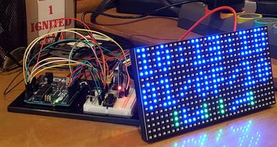
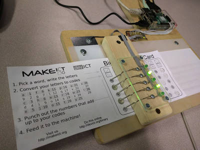
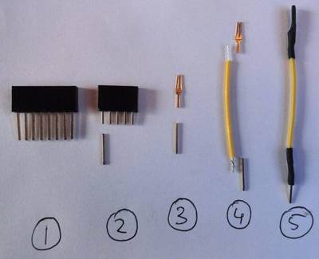
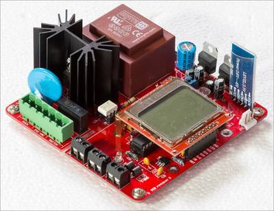
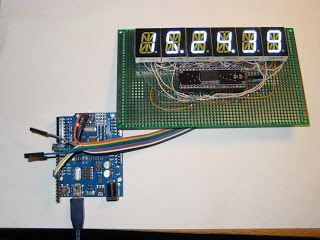

2016-03-03 - Nº 44

Editorial
Aqui está a Newsletter Nº 44 no seu formato habitual. Agora às quintas-feiras. Se gostar da Newsletter partilhe-a!
Todas as Newsletters encontram-se indexadas no link.
Esta Newsletter tem os seguintes tópicos:
Esta semana o Raspberry Pi fez 4 anos. Com mais de oito milhões de placas vendidas foi apresentada a terceira versão da placa. Esta vem com um CPU ARM Cortex-A53 de 64-bit a 1.2GHz (sensivelmente 10x o desempenho do Raspberry Pi 1), interface Wireless 802.11n e Bluetooth 4.1. A fabricante de pneus Goodyear apresentou um novo protótipo de pneu esférico designado Eagle-360 que altera a forma tradicional como conhecemos os pneus e poderá ser um dos aspectos inovadores na nova geração de carros sem condutor. Ficámos também a conhecer a forma como os robots estão a ajudar as cirurgias tanto pelo facto de serem mais precisos como poderem ir a locais onde as mãos humanas têm dificuldade.
Na Newsletter desta semana apresentamos diversos projetos de maker e na rubrica "Documentação" apresentamos quatro livros (eBooks) que podem ser descarregados livremente e que esta semana são sobre Conceitos de bases de dados Oracle, algoritmos em teoria de jogos, a teoria e a técnica associadas à musica electrónica, um livro sobre a forma como o "Public Domain" está a moldar a nossa sociedade e um livro sobre o Sonic Pi. Falamos igualmente da revista MagPI 43 e sobre a newelectronics de 23 de fevereiro.
 João Alves ([email protected])
João Alves ([email protected])
O conteúdo da Newsletter encontra-se sob a licença  Creative Commons Attribution-NonCommercial-ShareAlike 4.0 International License.
Creative Commons Attribution-NonCommercial-ShareAlike 4.0 International License.
Novidades da Semana ^
Raspberry PI 3 on sale now at $35
"Exactly four years ago, on 29 February 2012, we unleashed the original 256MB Raspberry Pi Model B on a largely unsuspecting world. Since then, we’ve shipped over eight million units, including three million units of Raspberry Pi 2, making us the UK’s all-time best-selling computer. The Raspberry Pi Foundation has grown from a handful of volunteers to have over sixty full-time employees, including our new friends from Code Club. We’ve sent a Raspberry Pi to the International Space Station and are training teachers around the world through our Picademy program. In celebration of our fourth birthday, we thought it would be fun to release something new. Accordingly, Raspberry Pi 3 is now on sale for $35 (the same price as the existing Raspberry Pi 2), featuring: A 1.2GHz 64-bit quad-core ARM Cortex-A53 CPU (~10x the performance of Raspberry Pi 1); Integrated 802.11n wireless LAN and Bluetooth 4.1; Complete compatibility with Raspberry Pi 1 and 2"
Goodyear reveals concept tires for autonomous cars
"The Goodyear Tire & Rubber Company has revealed two innovative new concept tires at the 86th Geneva International Motor Show that could literally reshape the future for autonomous cars. The concepts: the spherical-shaped Eagle-360 - a future-oriented tire - was designed with key features of maneuverability, connectivity and biomimicry for autonomous mobility, while the IntelliGrip, featuring advanced sensor and treadwear technology, is a solution for the earlier adoption of self-driving vehicles. Both tires are designed with safety in mind, which according to recent studies, is a key concern among consumers around autonomous vehicles. They reflect Goodyear’s focus on anticipating the rapidly evolving needs of its customers."
A robot will likely assist in your future surgery
"Dr. Umamaheswar Duvvuri has used a snake-like robot to perform more than a half dozen throat surgeries over the past month. Simply put, the robot is more accurate than Duvvuri could hope to be. The Flex Robotic System is so easy to use, Duvvuri said even medical students can learn to use it with proficiency within three tries. Duvvuri, director of head and neck surgery at the University of Pittsburgh Medical Center (UPMC), said the Flex Robotic System surgical robot he's been using has sub-millimeter accuracy; it can "snake" its way to any place in the body and it causes less damage to soft tissue."
Ciência e Tecnologia ^
SLAC’s Ultrafast ‘Electron Camera’ Visualizes Ripples in 2-D Material
"New research led by scientists from the Department of Energy’s SLAC National Accelerator Laboratory and Stanford University shows how individual atoms move in trillionths of a second to form wrinkles on a three-atom-thick material. Revealed by a brand new “electron camera,” one of the world’s speediest, this unprecedented level of detail could guide researchers in the development of efficient solar cells, fast and flexible electronics and high-performance chemical catalysts. The breakthrough, accepted for publication Aug. 31 in Nano Letters, could take materials science to a whole new level. It was made possible with SLAC’s instrument for ultrafast electron diffraction (UED), which uses energetic electrons to take snapshots of atoms and molecules on timescales as fast as 100 quadrillionths of a second."
Light-based memory chip is the first ever to store data permanently
"The world’s first entirely light-based memory chip to store data permanently has been developed by material scientists at Oxford University and University of Münster in collaboration with scientists at Karlsruhe and Exeter. The device, which makes use of materials used in CDs and DVDs, could help dramatically improve the speed of modern computing."
Quantum Physics Meets Genetic Engineering
"Nature has had billions of years to perfect photosynthesis, which directly or indirectly supports virtually all life on Earth. In that time, the process has achieved almost 100 percent efficiency in transporting the energy of sunlight from receptors to reaction centers where it can be harnessed — a performance vastly better than even the best solar cells. One way plants achieve this efficiency is by making use of the exotic effects of quantum mechanics — effects sometimes known as “quantum weirdness.” These effects, which include the ability of a particle to exist in more than one place at a time, have now been used by engineers at MIT to achieve a significant efficiency boost in a light-harvesting system."
Graphene nano-coils are natural electromagnets
"In the drive to miniaturize electronics, solenoids have become way too big, say Rice University scientists who discovered the essential component can be scaled down to nano-size with macro-scale performance. The secret is in a spiral form of atom-thin graphene that, remarkably, can be found in nature, according to Rice theoretical physicist Boris Yakobson and his colleagues. "
Imec and Ghent University develop thermoplastically deformable electronics
"Thanks to its energy-efficiency, excellent light quality, and high output power, light emitting diode (LED) technology is becoming the sustainable light source for the 21th century. But in addition, it also allows to design unprecedented, innovative lighting solutions. Imec and CMST’s new thermoplastically deformable electronic circuits now add a new dimension to the possibilities to fabricate novel lamp designs as well as smart applications in ambient intelligence and wearables."
World's first 3D blood vessel bio-printer could lead to the fabrication of human organs
"3D printing is becoming increasingly popular within the medical industry. Its relative cheapness and flexibility has recently seen the technology used to produce a titanium sternum and ribcage, as well as a prosthetic robot hand. Now, scientists from Chinese biotechnology company Sichuan Revotek Co. Ltd. have developed the world’s first 3D bio-printer capable of creating blood vessels using stem cell-based bio-ink and a data model based on a cloud computing platform."
Documentação ^
A documentação é parte essencial do processo de aprendizagem e a Internet além de artigos interessantes de explorar também tem alguma documentação em formato PDF interessante de ler. Todos os links aqui apresentados são para conteúdo disponibilizado livremente pelo editor do livro.
Livros
Oracle® Database Concepts 11g Release 2
"This manual provides an architectural and conceptual overview of the Oracle database server, which is an object-relational database management system. It describes how the Oracle database server functions, and it lays a conceptual foundation for much of the practical information contained in other manuals. Information in this manual applies to the Oracle database server running on all operating systems."
-
"Over the last few years, there has been explosive growth in the research done at the interface of computer science, game theory, and economic theory, largely motivated by the emergence of the Internet. Algorithmic Game Theory develops the central ideas and results of this new and exciting area. More than 40 of the top researchers in this field have written chapters whose topics range from the foundations to the state of the art. This book contains an extensive treatment of algorithms for equilibria in games and markets, computational auctions and mechanism design, and the 'price of anarchy,' as well as applications in networks, peer-to-peer systems, security, information markets, and more."
The Theory and Technique of Electronic Music
"This is the first book to develop both the theory and the practice of synthesizing musical sounds using computers. Each chapter starts with a theoretical description of one technique or problem area and ends with a series of working examples (over 100 in all), covering a wide range of applications. A unifying approach is taken throughout; chapter two, for example, treats both sampling and wavetable synthesis as special cases of one underlying technique. Although the theory is presented quantitatively, the mathematics used goes no further than trigonometry and complex numbers. The examples and supported software — along with a machine-readable version of the text — are available on the web and maintained by a large online community."
The Public Domain - Enclosing the Commons of the Mind
"Our music, our culture, our science and our economic welfare all depend on a delicate balance between those ideas that are controlled and those that are free, between intellectual property and the public domain. In The Public Domain: Enclosing the Commons of the Mind (Yale University Press) James Boyle introduces readers to the idea of the public domain and describes how it is being tragically eroded by our current copyright, patent, and trademark laws. In a series of fascinating case studies, Boyle explains why gene sequences, basic business ideas and pairs of musical notes are now owned, why jazz might be illegal if it were invented today, why most of 20th century culture is legally unavailable to us, and why today's policies would probably have smothered the World Wide Web at its inception."
-
"Learn to code musical masterpieces with the creator of Sonic Pi in our best Essentials e-book yet!"
Revistas
-
"We have Pi 3 interviews, specs, facts and tutorials to get you started with the latest, greatest Raspberry Pi. All this as well as a huge Astro Pi update and lots of new tutorials and projects."
newelectronics - 23 February 2016
"New Electronics is a fortnightly magazine focusing on technological innovation, news and the latest developments in the electronics sector. Downloadable as a digital page turner or pdf file, or offered as a hard copy, the New Electronics magazine is available in a format to suit you."
Modelos 3D ^
Com a disponibilidade de ferramentas que permitem dar azo a nossa imaginação na criação de peças 3D e espaços como o thingiverse para as publicar, esta rubrica apresenta alguns modelos selecionados que poderão ser úteis.
Buckle Box, Printable In One Piece
This is my second try at a one piece hinged box with latch. This latch is a little easier to operate than my box design I derived it from. For more information about this box, see the box it was derived from.
I like this latch design a lot. It locks the box closed very nicely and this version I printed as a test, has very nice tolerance at the hinge and at the latch. Now that the testing is over, I can design my real project.
UPDATE: v2 files now how a more tolerant latch. I realized that the tolerance for the latch was mistakenly coded to be half the tolerance of the hinge, since the hinge has slop tolerance for both the mail and female side. The latch should break free much easier on this version. Thanks everyone who printed it out or at least tried.
Customizable U-Hook

Parametric hook, universal and very strong.
I’ve been looking a while for a parametric hook modeling, but I didn’t found any available model that ideally combines strength and customizing possibilities. So I tried to create the model I wanted. This is an attempt for a universal and very strong parametric hook, easily 3D printable as a "finished product".
I did a "stress test" with my parametric U-Hook in its default configuration. The hook had been printed in PLA, with 2 perimeters, 0.2 mm layer height, and 20% infill. It supported a weight of 47,4 Kg.
Full documentation available as a PDF (in English and French) in the "Thing Files" section, or on my website : http://www.sergepayen.fr/en/parametric-u-hook
I also wrote a little tutorial about "how to use a parametric file" with OpenScad software, that could help you if you're not familiar with this type of file : http://www.sergepayen.fr/en/how-to-use-a-parametric-file
Custumizable solderless wire termination with pin headers
Customizable design of my solderless wire termination with pin headers (thing: http://www.thingiverse.com/thing:1380452). Notice when opening Customizer: the first image is a bug (and I don't know why), but as soon as you change a setting or view, it does a refresh and works fine.
It's possible to adjust number of rows (1 or 2) and desired number of pins and distance between pin rows...
This is my first OpenSCAD file, learned to use it in 30 min, so it's very basic ;)
Also added the SolidWorks part. Comments appreciated :)
Projetos Maker ^
Diversos Projetos interessantes.
DC Motor Direction Controller with tact switches
"DC Motor Direction Control project offers direction control using digital logic gates and a DPDT relay."
-
"Hey Everyone! In this video I'll show you how to make your own simple inductor joule thief, in just under 10 minutes! This circuit is so simple, even those not familiar with electronics can try it out as their first project! How is this Joule Thief different? Unlike most other joule thief circuits, this circuit uses a standard inductor. Hence there is no need to salvage a toroid and wind wire away to glory. The circuit is super simple, can easily be assembled on a breadboard, or can be soldered onto really tiny PCBs, if you want... I have made a video, explaining all you need to know about a Joule Thief, along with the circuit and more..."
-

"The Hexadecimal Clock (HexClock) will display the current time and date in both hexadecimal and binary notation. HexClock uses a realtime clock module to keep accurate time with a battery backup in case of lost power."
DIY Arduino Battery Spot Welder
"An Arduino Nano based Spot Welder for battery welding. This Spot Welder can be used to weld 18650 batteries. It needs a 7-12V power source (12V recommended) and uses a 12V car battery as welding current supply. Typically one 45Ah battery delivers enough current to get good welds with 0.15mm nickel strips. For thicker nickel strips maybe you will need bigger battery or two in paralell. The Welder generates a double pulse, where the first one is 1/8 of the time of the second one. Pulse time of second pulse is adjustable by the potentiometer and displayed on the screen in mS so you can exactly adjust the time. Its adjustable from 1 ... 20 mS."
Another Prelude to Automation - Cloning a Remote
"A few days ago, I published an IBLE on how to hack a remote. At the time, my mind was fixated on getting a Home Automation Project kicked off as soon as possible, and I decided to take the route as demonstrated in the above mentioned IBLE. I received a lot of helpful hints from fellow IBLE community members following which I decided to get of the speeding horse and spend some more time on researching a less invasive (and non-destructive) solution towards achieving my objective."
Low Power Arduino Temperature Monitor
"In this Instructable we build yet another temperature monitor using a DS18B20 temperature sensor. But this project is different. It can last on batteries for almost 1.5 years! Yes! Using the Arduino low power library, we can have this project running for a long time. Keep reading in order to find out more!"
Arduino Leonardo/Micro(ATMega32u4) as Gamepad/Game Controller
"The chip ATMega32u4 what is used in Arduino Leonardo, Micro or Pro Micro have ability to use custom USB HID Descriptors. Thanks this ability we can make our Arduino be as generic Gamepad! This library contains a all things to "simulate" a PS2 gamepad (so two thumbsticks and 16 buttons)."
PIR Motion Detector With Arduino: Operated at Lowest Power Consumption Mode
"This video demonstrates quick and easy approach of reducing power consumption of ATMEGA 328P based Arduino boards by around 70-75% using PIR or PID sensors for motion detection."
Microcontroller based smart battery charger
"The circuit what you are about to see is a smart battery charger based on ATMEGA8A with auto cut off.Different parameters are shown via a LCD during different charge states.Also the circuit will make sound via a buzzer upon charge completion. I built the charger basically to charge my 11.1v/4400maH Li-ion battery.The firmware is basically written to charge this particular battery type.You can upload your own charge protocol to fulfill your needs to charge other battery types."
Yet Another Line Following / Obstacle Avoidance 2WD Car
"This robot car is nothing new. Instructables and Youtube are peppered with a robot car similar to this one and honestly those postings inspired me to put together this affordable robotics kit that I could handout at my Robotics workshop (level 1) for grades 9-12. As far as what it does, the title says it all (or see the video) so I wont bore you with details. This robot isnt going to win any competitions or awards for being best of _whatever but it is an affordable kit which is perfect for educational purposes."_
-
"Use WS2812 LED matrix and clear display boxes and Blinkytape controller to build a simple programable RGB LED matrix Cube in 30 minutes."
-

"Kids start by writing a word on a card. Below each letter, they write the corresponding number using an encoding table (a=1, b=2, etc). Below each of those numbers are 5 holes, representing 1 bit and labeled 16, 8, 4, 2, and 1. After determining which numbers add up to the letter's code, those numbers are punched out, and the binary code is revealed. The card is then fed through our reader. Letters are spoken out loud as they pass, and the full word is read when the card is pulled all the way through. Holes are detected using paper clips and aluminum tape. While optical sensors would be more reliable, we feel it's important to keep the "magic" out of technology when using it as a teaching tool. The paperclips form a physical connection to the foil tape when a hole has been punched, and this can be directly observed. "
-

"Sometimes you run out of jumper wires. In that case it may be convenient to make them yourself."
3D Environment Laser Scanner from scratch
"Hello and welcome to my first instructable! Here we will go together through the affordable journey of how to make your very own 3D Laser Scanner. If you like this project, then I'd be super grateful for your vote in the Full Spectrum Laser contest!!"
-
"What I meant of Odd Use is the result not my expected but exactly what I needed. I experiment 7 segment LED display driven by 74HC595, I found the circuit and the code to build on, I previously built the DHT11 and 1602 LCD to test the temperature and humidity without problem, now I give it a try to display with 7 segment LED. I found a problem, I cannot run the getData() and displayData() simultaneously in the loop() function, the left three digits kept on flickering, though I still can guess it."
Using 433MHz Remote Controlled Switches on Arduino
"I guess everybody knows those remote controlled switches that in their simplest form come in a couple (mostly 3) of switcheable devices to plug into the mains outlet and that will receive a plug of a lamp or something and that can be switched on and off by a small hand held device. Using an Arduino or other micro controller instead of the handheld transmitter to switch those devices on and off is the basis of many DIY 'home automatisation' projects. Still, for the novice it can be a bit daunting to get one of those sets and use them in combination with a microcontroller. My goal in this instructable is to help those people on their way. However, I owe a big word of thanks to Jeroen Meijer for developing a great library, adding classes for some of the remotes I had and for helping me understand the concept of 'trits'"
-
"I have created a aimple Arduino Oscilloscope as above picture shows. Here is its summary. You can build your own!"
Mini CNC Plotter - Arduino Based
"In this project I will show you how to easily build your own low-cost Arduino Mini CNC Plotter! For X and Y axis we will use stepper motors and rails from two dvd/cd roms! Printing area will be max 4x4cm. Because it works with serial communication you can also use a Bluetooth module (like HC-06) to print your stuff wirelessly through your computer Bluetooth connection!"
Analog to Digital Converter module
"This simple A2D (Analog to Digital) Converter Board can log upto 8 channel of analog signal with 8 bit resolution. This board uses the ADC0808 chip from National Semiconductor."
An Android reflow controller that anyone can build

"Welcome to the never ending saga of Andy and his reflow controllers. About a year ago I published a project writeup showing how I built a PID-based reflow controller. It featured a 640360 graphical LCD from the Sony U5 Vivaz mobile phone and was all-surface mount. It worked well and continues to serve me well to this day but I always thought that there were improvements that I could make in several areas."
-
"Capacitors are vital components in electronics, but sometimes they are broken, or the value printed on the cap has become unreadable. Because my multi-meter does not have a capacitance measurement, I decided to make one! The principle of measuring capacitance is quite simple. The voltage of a capacitor charging through a resistor increases with time T. The time it takes to reach a certain voltage, is related to the values of the resistor and capacitor. In this project, we'll use a 555 timer circuit as a monostable multivibrator. If that sounds like some dark magic to you, don't worry, it's quite straightforward. I'll refer to the the Wikipedia page for the details, as we'll focus on the things we really need: the schematic and formula. The time in which the capacitor C charges through the resistor R is given by: T = ln(3) x R x C = 1.1 RC. If we know the value of the resistor and the time, we can calculate the capacitance: C = T / 1.1R."
Control Servo With Headphone Jack
"This idea started with this instructable. In it, RichMethods thoroughly explains how headphones work. His explanation made me realize that its possible to control up to two servos with a headphone jack. No Arduino, PIC, or any microcontroller required! This technique is perfect for turning laptops, or anything that has a headphone jack, into a robot."
Dash Hacking: Bare-Metal STM32 Programming
"he Amazon Dash button is a tiny device that orders products from Amazon.com at the press of a button. It's designed to be put wherever you store consumeables like paper towels, trash bags, etc. so that you can easily order more when they run out. The Dash is great at what it's designed to do, but did you know inside the Dash is a powerful ARM Cortex-M3 processor and WiFi module that are very similar to wireless development boards like the Particle Photon? You'll even find there are easily accessible test pads on the Dash which allow you to reprogram its CPU and turn it into your own $5 internet button! This guide will explore how to take apart the Dash and reprogram its CPU to run your own code."
Simple calculator based on Arduino MEGA
"Nowadays, doing calculations isn't a problem at all. Powerful calculators can be bought for few Euro or easily installed on phones and computers. However, we decided to turn our Arduino into a calculator because we think it could be a really interesting experiment. It's actually a very simple calculator, in fact it can just do the four basic calculations accepting only integer positive numbers. Despite this fact, the sketch is quite complex - and you'll figure it out on next steps -, but the circuit is pretty easy instead and requires few and common components."
-
"This is a simple to build motor controller. It is handy for many projects using a motor controlled by a micro-controller. It can be used as an Electronic Speed Controller (ESC) and has forward and reverse control. It can be used in robotics, remote control projects, portable vehicles and most things motorized. It also uses very little parts. All of this is made into a tiny package to fit in your DIY projects. This circuit is based off of a Driving Bigger Loads circuit in one of my books. That circuit only used one MOSFET and a diode. It is meant for a micro-controller to control a motors speed. To be able to go in reverse I just added a DPDT relay and another MOSFET, diode pair to control the polarity switch. I hope you enjoy this instructable."
Portable prototyping lab with oscilloscope and arduino
"Hey all together I'm back, with a new project. I was quiet busy with my wonderful newborn daughter (just 7 weeks old) when I start to wrote this it is 00:00 in Germany and my daughter is finally sleeping and I found some time to present you a new project. This will be more like a Story of building it, it is not like I will tell you how to solder how to make it. I want to inspire you to build your own just give you an idea how it can look and how it grow. Like my daughter my projects are never totally finished they are growing."
Multiple Fermentation Chamber Control with BrewPi
"In this Instructable I will try to explain how I built a BrewPi based fermentation chamber control system for multiple chamber control. If you are a brewer like me, you don't usually have just one beer going at a time. I have several. Subsequently, I have several fridges/freezers that I use as fermentation chambers. A single BrewPi setup will not work for me and making 3 separate setups, each with an individual Raspberry Pi is expensive and complicated."
DIY csCNC 2 (Linistepper Driver and testing with Buspirate)
"Since I started building DIY CNC, I checked the free, opensource motor controller. There are several alternatives. I chose linisteppr controller."
STM32 Nucleo and DFU USB Bootloading
"Over the last few months I have been playing with the Nucleo development boards from STMicroelectronics. If you're unfamiliar with them, they are fast, mbed and Arduino (headers) compatible. This makes it easy like an Arduino to program and use. What sets them apart is that they are 32bit and have, depending on the model, tons of memory and flash. The Nucleo boards maintain the Arduino footprint but also have headers for the extra pins which gives this board plenty of GPIO for your projects. In turn, you end up with multiple buses such as SPI, I2C, and UARTs for your consumption. They are priced very well and come in different flavors based on your needs. Each flavor is based on different ARM Cortex architectures such as M0, M3, and M4. One of the best features is real debugging via ST-Link/V2-1. The unfortunate thing due to the nature of mbed, you can only use the debugging features using a full desktop IDE such as Keil or some of the other free alternatives. But mbed allows you to export your code from the online IDE to the project format for those IDE's. So there's that."
Water Level Indication Using Combination of three NPN Transistors
"Water Level Indication Circuit consists of breadboard, NPN transistors, LEDs, resistors, 9V battery and a tank made from transparent disposable 500 ml drinking water bottle."
-
"There are several arduino based game-pad like Arduboy, Gameby and Gamebuino. You can make and play these game-pad by yourself. These are single player only but remember that you can also make and play the arduino network game!! This document shows how to build the network game-pad with arduino and give you the network game example, othello."
-

"MAX6955 is an interesting LED driver chip. It is the primordial charlieplexing device, being the materialization of a technique invented by Charlie Allen of Maxim Integrated. Without understanding how charelieplexing works, it is actually counter-intuitive to wire multiple (up to 8) 16-segment displays to such a driver chip. Fortunately, Maxim has great documentation on how to do it."
The Art of Representing Floating-Point Numbers as Integers
"Have you been using float or double variables to perform mathematical operations on embedded systems without a Floating-Point Unit (FPU)? You are doing it wrong! Thats incredibly inefficient. Use fixed-point representation instead. An FPU is an hardware block specially designed to carry on arithmetic operations on floating point numbers. Even though the C/C++ code may work without an FPU, its always much faster to use hardware designed for a specific purpose, like this one, instead of relying on a software implementation, something that the compiler will do for you, knowing the hardware restrictions you have but not in an efficient manner. Essentially, it will generate a lot of assembly code, greatly increasing the size of your program and the amount of time required to complete the operation. Thus, if you dont have an FPU available and you still want to perform those arithmetic operations efficiently youll have to convert those numbers to fixed-point representation. Integers! But how? By scaling them. Lets see how that scaling value may be determined."
An elegant, stacking, Real Time Clock for Raspberry Pi
"If you want to build a good Real Time Clock for your Raspberry here's the tutorial you were looking for! This is a revised and simplified version for Instructables made out of this article at my personal blog. Difference is mainly in the structure and my article is a bit more verbose. Why another "annoying" how to on building a Real Time Clock for the RPi? Because almost everywhere you find instructions telling you to build the circuit on a breadboard and simply wire it with a couple of loose wires. This is a full Stacking Shield you can elegantly install on top the RPi leaving the GPIO entirely exposed for other devices. And you can build it for no more than 8$, instead of buying one for double the price."
-
"A simple design to control a mini 5v fan with python, without the need of a breadboard, transistors etc. All you need are a few cables and a 1 channel relay. I had a 2 channel relay which i recommend, since its almost the same price plus you get an extra controller. A script executing every hour will check the pi's temperature and turn on/off a fan until the desired temperature is reached."
Prototype 14-segment-display shield
"There are many ways (*) to drive the 6-digit 14-segment common cathode display from Seeed Studio. This time I chose to multiplex two MAX7221, a method described here (but used for driving a bi-color 8x8 LED matrix)."
-
"This tutorial goes through the steps of using an Arduino Uno to read the inputs of a PS/2 barcode scanner."
DIY Vending Machine using Arduino & 1Sheeld
"Simply the machine has four types of candies and each type has it's special code, you should tweet with this special code to get your candy."
-
"As everyone at some point will recognise the Raspberry Pi doesn' t include any kind of shutdown button. So the only way to power it off is by unplugging it from the power supply. To make sure you get no corruption of your data files on the SD card you should shutdown the Raspberry before powering it off. So the whole procedure can be a bit annyoing especially if you want to use the Raspberry as some kind of embedded PC e.g. a media server or an internet radio."
-
"I recently found six 2.3? red 7 segment displays in my collection which I purchased from Rapid Electronics when they were clearing out non-RoHS stock. Since I have no clock at my work bench I decided to construct one from some prototyping pad board, a Microchip PIC18F26K20 microcontroller and a Dallas DS32KHZ temperature compensated 32.768kHz crystal."
Short circuit protection for (almost) any power supply
"This instructable is about a universal short circuit protection that I've designed to use in bench power supplies. I've designed it to fit in most power supplies circuits. In order to this circuit fit in your bench power supply, you will need to do some calculations, but don't worry, I'll explain everything on the next steps."
-
"Project: Create a graphic servo tester that lets you test your servos. I had some servos that I needed to test. I had to see if they worked, and needed to see what the limits were for clockwise and counterclockwise operation. I needed to center the servo when fed with a 1500 microsecond pulse. I used a CGMICROMITE as the brains and an LCD for the display. Buttons, voltage regulator, a few passives, and connectors are the only additional components mounted on the PCB."
USB Audio Streamer A Microchip PIC based USB sound card

"The sound card runs at a sample rate of 48KHz, 32KHz or 24KHz selectable by the OS with 12 bits per sample. The quality approaches commercial grade as the sample rate is higher then CDs. 44.1KHz was not implemented due to the difficultly and additional processing overhead. The sample rates that were implemented are all a multiple of the 1ms USB frame meaning each frame sends the same amount of data. 44.1KHz requires the card to handle different amounts of data each frame requiring more advanced buffering and synchronization techniques and more processing power. Microsoft Windows automatically resamples the 44.1KHz audio found on CDs to 48KHz."
Connecting HC-05 Bluetooth Module to Arduino
"The HC-05 Bluetooth module is an excellent interface for communicating with your mobile. It has a great data transfer rate and very easy to implement."
Dual USB Serial and I2C Converter
"Hi all! After a couple of months with a lot of work, I come here again with the last board I develop before Christmas. Its a dual USB serial and I2C converter based on two MCP2221 Microchip 2.0 USB-Serial bridges. I develop it as a need on my work with the last project Im involved. I need to monitor a serial communication between two devices. With only one converter, I must choose between RX and TX lines to monitoring the traffic. With this solution, I can listen at the same time TX and RX lines, so the monitoring is more easy. And with a software like Docklight (you can download a free evaluation copy here), you can choose the monitoring option to display both channels. After the break you can find all the technical info of the board!"
Arduino Cyanotype Right Exposer: ACRE
"This project will help you to expose correctly your cyanotypes under the sun light. Because its UV component is variable in time, and depends of many factors, this tool monitor the accumulated UV dose by measuring every second the actual intensity. Once you calibrate this tool, you will can reproduce the results independently if is a sunny, cloudy or rainy day. The principle upon this works is what in mathematics is know as Numerical Integrator . In a simple case, let's assume a certain UV value which is constant (I), and takes some time (t) to properly expose our cyanotype. Now, if we double the UV intensity (I * 2), the time to have the same correct expose will be the half than before (t / 2)."
That's all Folks!